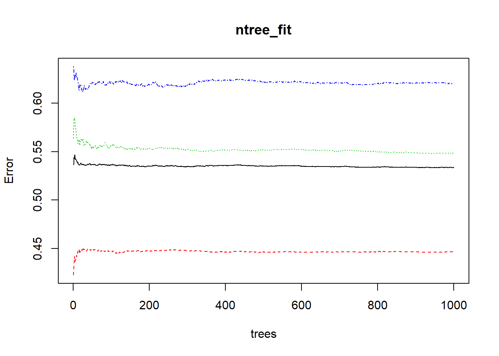
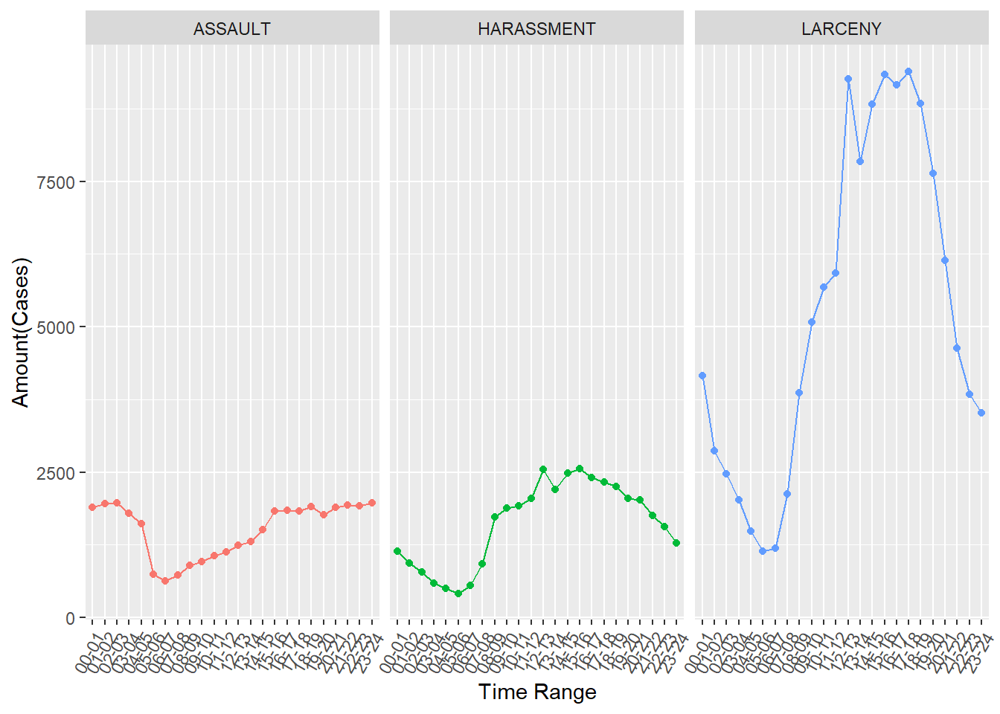
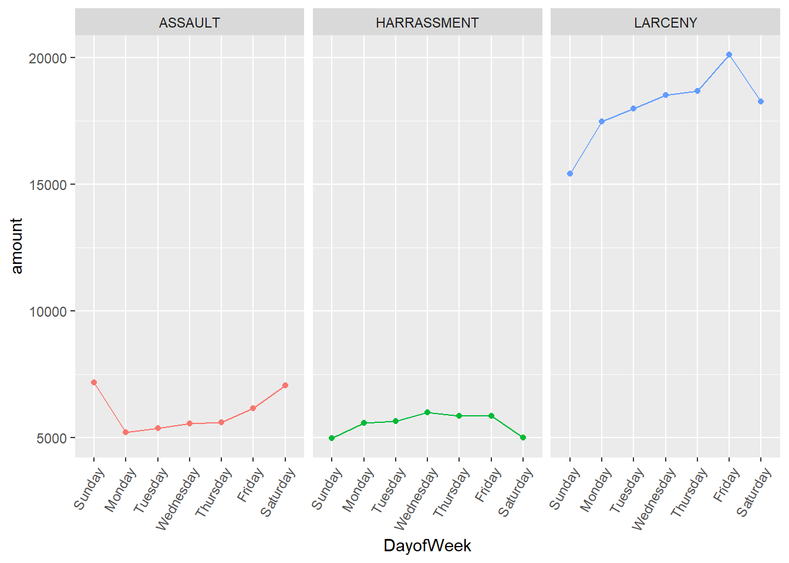
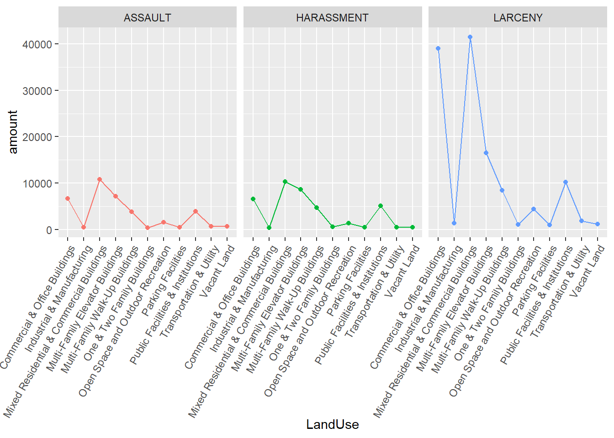

Crime is a social issue, like a disease, which tends to spread as spatial clusters. We are always seeking for ways to minimize and prevent the occurrence of crime. Imagine if we could predict the probability of where and when crime occurs, our police could deploy the law enforcement to potentially dangerous areas more efficiently. And usually, we may regard the occurrence of crime as random and use behavioral and social methods to study it. However, with the development of data analysis and technology, we could use some quantitative ways to analyze it.
There is one program named PredPol, conducted by researchers from the University of California, Los Angeles (UCLA). They collected about 13 billion crime cases in 80 years and just used two variables, ‘when’ and ‘where’ to build models to predict where a crime could happen during each day, which is amazing and shows us the power of the environment influencing human’s choice. And the paper written by Dr. Irina Matijosaitiene revealed the effect of land uses on crime type classification and prediction.
So, in this project, I’d like to use visualization at first to give an intuitive feel about the relationship between the occurrence of crime with ‘when’ and ‘where’. And then I will build classification models for different crime types by using ‘when’ and ‘where’ as features input in my models.
I will use the crime data from 2015-2017 in Manhattan, New York City to build classification models to classify the top three crime types occurred in this study area, which are larceny, harassment and assault. And the main factors input as features in the models are time and location, to be specific, time refers to exact time and day of week, and location refers to land use.
library(dplyr)
library(stringr)
library(tidyr)
library(readr)
library(lubridate)
library(sp)
library(sf)
library(ggplot2)
library(knitr)
library(kableExtra) #for table styling
library(fastDummies) #get the dummy variables
library(ranger)#random forest model
library(randomForest) #random forest model
knitr::opts_chunk$set(cache=TRUE,cache.lazy = FALSE) # cache the results for quick compilingThis code chunk is used to download and clean the crime data.
in ‘nypd’ dataset, the granularity of crime classification into multiple crime sub-types is very small for this project, for example, ‘assault’ is classified as ‘assault 1’, ‘assault 2’, ‘assault peace officer’, etc. As the very small granularity of crimes is out of the research goal, and it does not focus on the smaller sub-types of crime (for instance, ‘larceny in chain stores’, ‘larceny in boutiques’, ‘larceny in clothing stores’, etc.), the project has aggregated crime sub-types into larger groups, such as ‘larceny’, ‘harassment’, ‘assault’, ‘burglary’, etc., using only crime data for 2015–2017. In crime analysis, especially crime in terms of urban planning, data from the recent 2-3 years is the most commonly used.
#read the raw data
#It may takes a long time to run due to the large size of the raw dataset
crime_file = "nypd.csv"
crime_url = "https://data.cityofnewyork.us/api/views/qgea-i56i/rows.csv?accessType=DOWNLOAD"
download.file(crime_url,crime_file)
nypd <-read.csv(crime_file,stringsAsFactors = FALSE)
#clean and tidy crime data
#classify exact time into different time ranges
time_range<- data.frame(id=c(0:24),
range= c("00-01","01-02","02-03","03-04","04-05","05-06","06-07","07-08",
"08-09","09-10","10-11","11-12","12-13","13-14","14-15","15-16",
"16-17","17-18","18-19","19-20","20-21","21-22","22-23","23-24","00-01"))
#exract the relative information into crime_MAN dataframe
crime_MAN <- nypd %>%
drop_na(Longitude)%>% #remove NA value
drop_na(Latitude)%>%
drop_na(CMPLNT_FR_DT)%>%
drop_na(CMPLNT_FR_TM)%>%
st_as_sf(coords=c("Longitude","Latitude"),crs = 4326)%>% #add geo-referenced information
rename( #rename some column names to operate easily
CrimeID = CMPLNT_NUM,
CrimeType = PD_DESC)%>%
mutate(Date = mdy(CMPLNT_FR_DT),#change data column into DATE type
DayofWeek = wday(Date,label = TRUE,abbr = FALSE),
Day=wday(Date), #get the information about day of week
Time = hour(hms(CMPLNT_FR_TM)))%>% #get the hour of time
mutate(TimeRange = time_range$range[match(.$Time, time_range$id)])%>% #add a new column storing time ranges
filter(BORO_NM == "MANHATTAN"& #limit the study area
Date >= ymd(20150101)& #limit the study periods
Date <= ymd(20171231))%>%
select("CrimeType","DayofWeek","TimeRange","Time","Day") #select the relative columns
#combine sub-classes of crime types into big classes
crime_type <- c("LARCENY","ASSAULT","HARASSMENT,SUBD","THEFT","ADMINISTRATIVE CODE","HOMICIDE","INTOXICATED","LOITERING","OTHERSTATE LAW","OFFENSES","CRIMINAL MISCHIEF")
for(i in 1:length(crime_type)){
crime_MAN$CrimeType[grep(crime_type[i],crime_MAN$CrimeType)] <- crime_type[i]
}
crime_MAN$CrimeType[crime_MAN$CrimeType == "HARASSMENT,SUBD"] <- "HARASSMENT"
knitr::opts_chunk$set(cache = TRUE, warning = FALSE,
message = FALSE, cache.lazy = FALSE)This code chunk is used to download and clean the land use data.
In pluto dataset, there are 84 variables, such as a unique ID, land use code and title (such as ‘One & Two Family Buildings’, ‘Multi-Family Walk-Up Buildings’, etc.), lot shape, area, tax code, address, as well as many other variables for each lot. And for this research, the interest is only in the geo-spatial and land use information for all lots in Manhattan. Therefore, the number of variables were reduced; leaving the following variables for further research: unique ID, land use ID and geo-spatial attributes. For displaying, Each land use ID is with the corresponding name, for instance 01—one & two family buildings, 02—multi-family walk-up buildings, etc.
#please download and unzip the landuse dataset if you do not have
landUse_url = "https://www1.nyc.gov/assets/planning/download/zip/data-maps/open-data/nyc_mappluto_19v1_shp.zip"
landUse_file = "pluto.zip"
download.file(landUse_url,destfile = landUse_file)
unzip(landUse_file, exdir = "pluto")
#read the raw data
mapluto <-st_read("pluto/MapPLUTO.shp")
#to add the name of each landuse type
landUse_type <- data.frame(id=c(1:11),type = c("One & Two Family Buildings",
"Multi-Family Walk-Up Buildings",
"Multi-Family Elevator Buildings",
"Mixed Residential & Commercial Buildings",
"Commercial & Office Buildings",
"Industrial & Manufacturing",
"Transportation & Utility",
"Public Facilities & Institutions",
"Open Space and Outdoor Recreation",
"Parking Facilities",
"Vacant Land"))
#exract the relative information
landUse_MAN <- mapluto %>%
st_transform(st_crs(crime_MAN))%>% #make sure the same coordinate system
drop_na(LandUse)%>%
filter(Borough == "MN")%>% #limit the study area
select("Lot","LandUse")%>%
rename(LandUseID = LandUse)%>% #because the raw dataset just stored landuse id in "LandUse" Column
mutate(LandUseID = as.integer(LandUseID))%>%
mutate(LandUse = landUse_type$type[match(.$LandUseID, landUse_type$id)]) #add a new column storing land cover names
knitr::opts_chunk$set(cache = TRUE, warning = FALSE,
message = FALSE, cache.lazy = FALSE)This code chunk is used to get the table describing the top 10 occurred crime types, which is presented in Result part.
top10_Crime_MAN <- crime_MAN %>%
group_by(CrimeType)%>%
summarize(Amount = n())%>% #calculate the number of each crime type occurred totally
mutate(Percent = Amount/sum(Amount)*100)%>% #calculate the percent of each crime type
arrange(desc(Amount))%>% #sort ranging from the highest number to lowest one
rename("Percent(%)"=Percent,
"Amount(Cases)"=Amount)%>%# rename for displaying
st_set_geometry(NULL) #no need to have geometry informationThis code chunk is to analyze time preference of top 3 commited crime types and the graphes are presented in ‘Result’ part.
top3 <- data.frame(id=c(1:3),type = c("LARCENY","HARASSMENT","ASSAULT"))
#get the numbers of cases happened of each crime type in different time ranges
time_top3 <- crime_MAN %>%
st_set_geometry(NULL)%>%
filter(CrimeType %in% top3$type)%>%
group_by(TimeRange,CrimeType)%>%
summarize(amount=n())
#get the numbers of cases happened of each crime type in different days of week
dw_top3 <- crime_MAN %>%
st_set_geometry(NULL)%>%
filter(CrimeType %in% top3$type)%>%
drop_na(DayofWeek)%>%
group_by(DayofWeek,CrimeType)%>%
summarize(amount=n())This code chunk is to analyze land uses preference of top 3 commited crime types and the graphes are presented in Result part.
#add landuse information into the crime dataset
top3_Crime_LandUse_MAN <- crime_MAN %>%
filter(CrimeType %in% top3$type)%>%
st_join(landUse_MAN,join = st_nearest_feature,left = FALSE)
top3_Crime_LandUse_MAN$CrimeTypeID = top3$id[match(top3_Crime_LandUse_MAN$CrimeType, top3$type)]
#get the numbers of cases happened of each crime type on different land covers
ld_top3 <- top3_Crime_LandUse_MAN %>%
group_by(CrimeType,LandUse)%>%
summarize(amount=n())Before building models, one important thing is feature engineering. According to the visualization of the relation between crime types and days of week, there is not much siginificant correlation between them. So I removed DayofWeek and just used Time and LandUseID as features.And I used dummy_cols()function to make features into dummy variables. And then, I splited the data into three parts, training data for traning models, validation data for tuning parameters of models and test data for testing how models work well.
CL <- top3_Crime_LandUse_MAN %>%
st_set_geometry(NULL)%>%
select("CrimeTypeID","Time","LandUseID")
CL.dummy <- dummy_cols(CL,select_columns = c("Time","LandUseID"))%>%
subset(select = -c(Time,LandUseID))
#split into train and test data
set.seed(42)
id <- sample(nrow(CL.dummy), 0.8 * nrow(CL.dummy))
train <- CL.dummy[id, ]
CL.test <- CL.dummy[-id, ]
#split train data into train data and validation data
set.seed(42)
train2 <- train[-sample( which(train$CrimeTypeID == 1 ),67000), ]
id2 <- sample(nrow(train2), 0.8 * nrow(train2))
CL.train <- train2[id2, ]
CL.validation <- train2[-id2, ] This code chunk is to build the basic random forest model using default parameters and shows the confusion matrix where the row and column names are “assault, harassment and larceny” from top to bottom and from right to light; and rows represent predicting values and columns represent true values.
set.seed(42)
CL.train$CrimeTypeID <- as.factor(CL.train$CrimeTypeID)
CL.test$CrimeTypeID <- as.factor(CL.test$CrimeTypeID)
rf_model <- ranger(CrimeTypeID ~ .,data=CL.train)
pred <- predict(rf_model, data = CL.test)
CM_RF <- table(CL.test$CrimeTypeID,pred$predictions)%>%
kable()%>%
kable_styling(bootstrap_options = "striped", full_width = F)
CM_RF| 1 | 2 | 3 |
|---|---|---|
| 14436 | 6496 | 4301 |
| 3009 | 3435 | 1445 |
| 2236 | 2152 | 2805 |
Mtry refers to max feature in random forest, which is the number of features to consider when looking for the best split. And this table shows the top3 most least errer values with their max features.
CL.validation$CrimeTypeID <- as.factor(CL.validation$CrimeTypeID)
n= length(names(CL.validation))
errTable <-c()
for (i in 1:(n-1)){
mtry_fit <- randomForest(CrimeTypeID~.,CL.validation,mtry=i)
err = mean(mtry_fit$err.rate)
errTable <- rbind(errTable,c(i,err))
}
colnames(errTable) <- c("mtry","err")
errTable2 <- as.data.frame(errTable)
errTable <- errTable2%>% arrange(err)
kable(errTable[1:3,])%>%
kable_styling(bootstrap_options = "striped", full_width = F)| mtry | err |
|---|---|
| 7 | 0.5403955 |
| 5 | 0.5443437 |
| 6 | 0.5443852 |
Num.tree refers to the mumber of trees in the forest.
ntree_fit<-randomForest(CrimeTypeID~.,CL.validation,mtry=7,ntree=1000)
plot(ntree_fit)
From 2015-2017, there are 342640 cases of crime occurred. The largest crime in Manhattan with 126413 registered cases by police, resulting in 36.89% of all crimes. Larceny is followed by harassment, having 38829 registered cases, resulting in 11.33% of all crimes. Assault was the third largest crime in Manhattan (after larceny and harassment) with 36333 registered cases, resulting in 10.6% of all crimes.
According to the criminal law and the Penal Code, ‘larceny’ is ‘the unlawful taking and carrying away of someone else’s property without the consent of the owner and with the intent to permanently deprive the owner of the property’. ‘Criminal harassment’ entails ‘intentionally targeting someone else with behavior that is meant to alarm, annoy, torment or terrorize them’.’Assault’ is ‘a physical attack on someone’. Under New York Penal Law, ‘assault’ is when a person
i) has an intent to cause physical injury to another person,
or ii) he recklessly causes physical injury to another person,
or iii) with criminal negligence, he causes physical injury to another person by means of a deadly weapon or a dangerous instrument.
| CrimeType | Amount(Cases) | Percent(%) |
|---|---|---|
| LARCENY | 126413 | 36.89 |
| HARASSMENT | 38829 | 11.33 |
| ASSAULT | 36333 | 10.60 |
| CRIMINAL MISCHIEF | 17936 | 5.23 |
| AGGRAVATED HARASSMENT 2 | 12368 | 3.61 |
| MARIJUANA, POSSESSION 4 & 5 | 9015 | 2.63 |
| CONTROLLED SUBSTANCE, POSSESSI | 6618 | 1.93 |
| MISCHIEF, CRIMINAL 4, OF MOTOR | 6315 | 1.84 |
| FRAUD,UNCLASSIFIED-FELONY | 4268 | 1.25 |
| FORGERY,ETC.,UNCLASSIFIED-FELO | 4013 | 1.17 |
We could see assault is more likely to happen in around 3pm. And after 3pm, the amount of assault occurred remains unchanged, but the amount of harassment occurred starts to decrease until 5am in next day. As for larceny, the most interesting part is from 12pm-5pm. After reaching the peak at 12pm, the amount starts to decrease until 1pm and increases between 2 to 3pm; and then it decreases in 4pm a little bit and increases until 5pm. After 5pm, the amount of larceny occurred drops rapidly until 5am in next day. And from 5am-6am, criminals decide to have a rest and the amount of the three crime types are least. 
We could see the amount of harassment occurred changes slightly. And assault would be more likely to happen on weekends, while larceny tend to occur on weekends.

We could see the three crime types have similar preferences on land uses. They are more likely to occur in mixed residential & commercial buildings(land use code 3,LUC3), commercial & office buildings(LUC1) and public facilities & institutions(LUC9). But comparing with the amounts in different land use type, larceny tend to happen in former two land use types rather than the last one. 
importance to see how distinct one feature in the three crime types. And the table lists top 10 most distinct features.
| features | importance | pvalue |
|---|---|---|
| Time_3 | 159.46629 | 0.0000000 |
| Time_2 | 147.32432 | 0.0000000 |
| Time_1 | 89.91591 | 0.0000000 |
| Time_4 | 154.63446 | 0.0000000 |
| LandUseID_3 | 96.33266 | 0.0000000 |
| LandUseID_4 | 52.12956 | 0.0000000 |
| LandUseID_2 | 48.92194 | 0.0000000 |
| LandUseID_5 | 377.48088 | 0.0000000 |
| Time_12 | 32.83325 | 0.0217391 |
| Time_23 | 18.99888 | 0.2173913 |
This code is to build the random forest model with parameters tuned. And the table shows the confusion matrix where the row and column names are “assault, harassment and larceny” from top to bottom and from right to light; and rows represent predicting values and columns represent true values.
RF.CL <- ranger(CrimeTypeID ~ .,data=CL.train,num.trees = 500,mtry=7)
pred.CL <- predict(RF.CL, data = CL.test)
CM_RF1 <- table(CL.test$CrimeTypeID,pred.CL$predictions)%>%
kable()%>%
kable_styling(bootstrap_options = "striped", full_width = F)
CM_RF1| 1 | 2 | 3 |
|---|---|---|
| 14319 | 6356 | 4558 |
| 2982 | 3331 | 1576 |
| 2188 | 2028 | 2977 |
The final classification result was not good enough, there might two reasons. The first one is imbalanced classes. In fact, when removing all records of larceny and just classifying harassment and assault crime types, the result showed about 70% accuracy. So, for the further analysis, I’d like to find some other ways to reduce the effect of imbalanced classes
The second reason is that there is much work about feature engineering. Firstly, as for exact time, this project just made time range based on hour and ignored the effect of minutes. And actually, the minutes ranges would be a good feature to the classification. Secondly, the pattern in different time range and different days of week of the three crime types are not distinct enough for classification, in other words, for the further analysis, I’d like to find some new features to represent the effect of time on different crime types. According to the figures abour the preferences, I’d like introduce some new features, such as 5am proximity, 3pm proximity and weekend proximity, etc.
And I’d like to try some more efficient methods for the further analysis, such as other classification models and Bayesian optimization for parameters tuning.